Some HTK tools require a single HMM to be defined. For example, the isolated-unit re-estimation tool HREST would be invoked as
HRest hmmdef s1 s2 s3 ....
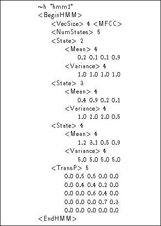
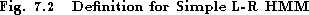
This would cause the model defined in the file hmmdef to be input and its parameters re-estimated using the speech data files s1, s2, etc.
HMM definition files consist of a sequence of symbols representing the elements of a simple language. These symbols are mainly keywords written within angle brackets and integer and floating point numbers. The full HTK definition language is presented more formally later in section 7.9. For now, the main features of the language will be described by some examples.
Fig 7.2 shows a HMM definition corresponding to the simple
left-right HMM illustrated in Fig 7.1. It is a continuous density
HMM with 5 states in total, 3 of which are emitting. The first symbol in the
file  h indicates that the following string is the name of a macro of
type h which means that it is a HMM definition (macros are explained
in detail later). Thus, this definition describes a HMM called ``hmm1''.
Note that HMM names should be composed of alphanumeric characters only and must
not consist solely of numbers. The HMM definition itself is bracketed by the
symbols <BeginHMM> and
<EndHMM> .
h indicates that the following string is the name of a macro of
type h which means that it is a HMM definition (macros are explained
in detail later). Thus, this definition describes a HMM called ``hmm1''.
Note that HMM names should be composed of alphanumeric characters only and must
not consist solely of numbers. The HMM definition itself is bracketed by the
symbols <BeginHMM> and
<EndHMM> .
The first line of the definition proper specifies the global features of the HMM. In any system consisting of many HMMs, these features will be the same for all of them. In this case, the global definitions indicate that the observation vectors have 4 components (<VecSize> 4) and that they denote MFCC coefficients (<MFCC>).
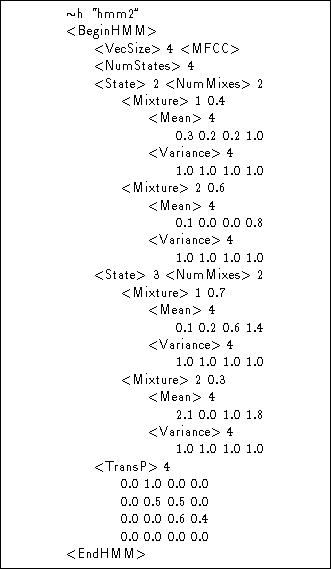
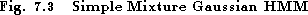
The next line specifies the number of states in the HMM. There then follows a definition for each emitting state j, each of which has a single mean vector 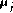 introduced by the keyword <Mean> and a diagonal variance vector 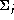 introduced by the keyword <Variance>. The definition ends with the transition matrix 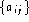 introduced by the keyword <TransP> .
Notice that the dimension of each vector or matrix is specified explicitly before listing the component values. These dimensions must be consistent with the corresponding observation width (in the case of output distribution parameters) or number of states (in the case of transition matrices). Although in this example they could be inferred, HTK requires that they are included explicitly since, as will be described shortly, they can be detached from the HMM definition and stored elsewhere as a macro.
The definition for hmm1 makes use of many defaults. In particular, there is no definition for the number of input data streams or for the number of mixture components per output distribution. Hence, in both cases, a default of 1 is assumed.
Fig 7.3 shows a HMM definition in which the emitting states are 2 component mixture Gaussians. The number of mixture components in each state j is indicated by the keyword <NumMixes> and each mixture component is prefixed by the keyword <Mixture> followed by the component index m and component weight 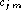 . Note that there is no requirement for the number of mixture components to be the same in each distribution.
State definitions and the mixture components within them may be listed in any order. When a HMM definition is loaded, a check is made that all the required components have been defined. In addition, checks are made that the mixture component weights and each row of the transition matrix sum to one. If very rapid loading is required, this consistency checking can be inhibited by setting the Boolean configuration variable CHKHMMDEFS to false.
As an alternative to diagonal variance vectors, a Gaussian distribution
can have a full rank covariance matrix. An example of
this is shown in the definition for hmm3 shown in
Fig 7.4. Since covariance matrices are symmetric,
they are stored in upper triangular form
i.e. each row of the matrix
starts at the diagonal element . Also, covariance matrices are stored
in their inverse form i.e. HMM definitions contain 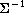
rather than
. Also, covariance matrices are stored
in their inverse form i.e. HMM definitions contain 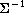
rather than  . To reflect this, the keyword chosen to
introduce a full covariance matrix is <InvCovar> .
. To reflect this, the keyword chosen to
introduce a full covariance matrix is <InvCovar> .
Notice that only the second state has a full covariance Gaussian component. The first state has a mixture of two diagonal variance Gaussian components. Again, this illustrates the flexibility of HMM definition in HTK. If required the structure of every Gaussian can be individually configured.
Another possible way to store covariance information is in the form
of the Choleski decomposition L of the
inverse covariance matrix
i.e. 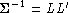 .
Again this is stored externally in upper triangular form so L' is
actually stored. It is distinguished from the normal inverse covariance
matrix by using the keyword <LLTCovar>
in place of <InvCovar>.
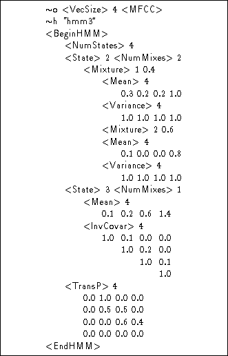
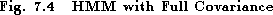
The definition for hmm3 also illustrates another
macro type, that is,  o. This macro is used as an alternative
way of specifying global options and, in fact, it is the format used
by HTK tools when they write out a HMM definition. It is provided so that global
options can be specifed ahead of any other HMM parameters. As will
be seen later, this is useful when using many types of macro.
o. This macro is used as an alternative
way of specifying global options and, in fact, it is the format used
by HTK tools when they write out a HMM definition. It is provided so that global
options can be specifed ahead of any other HMM parameters. As will
be seen later, this is useful when using many types of macro.
As noted earlier, the observation vectors used to represent the speech signal can be divided into two or more statistically independent data streams. This corresponds to the splitting-up of the input speech vectors as described in section 5.10. In HMM definitions, the use of multiple data streams must be indicated by specifying the number of streams and the width (i.e dimension) of each stream as a global option. This is done using the keyword <StreamInfo> followed by the number of streams, and then a sequence of numbers indicating the width of each stream. The sum of these stream widths must equal the original vector size as indicated by the <VecSize> keyword.
An example of a HMM definition for multiple data streams is hmm4 shown in Fig 7.5. This HMM is intended to model 2 distinct streams, the first has 3 components and the second has 1. This is indicated by the global option <StreamInfo> 2 3 1. The definition of each state output distribution now includes means and variances for each individual stream.
Thus, in Fig 7.5, each state is subdivided into 2 streams using the <Stream> keyword followed by the stream number. Note also, that each individual stream can be weighted. In state 2 of hmm4, the vector following the <SWeights> keyword indicates that stream 1 has a weight of 0.9 whereas stream 2 has a weight of 1.1. There is no stream weight vector in state 3 and hence the default weight of 1.0 will be assigned to each stream.
No HTK tools are supplied for estimating optimal stream weight values. Hence, they must either be set manually or derived from some outside source. However, once set, they are used in the calculation of output probabilities as specified in equations 7.1 and 7.3, and hence they will affect the operation of both the training and recognition tools.